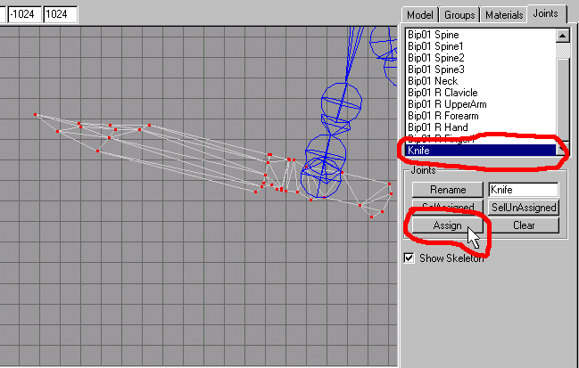

|
|
Find the "Knife" in the "Joints" list box and click on it.Switch to the "Model" rollout and make sure you have the "Select" button, and the "Vertex" button both on. Switch back to the "Joints" rollout and click on the "Assign" button as shown in Figure 1.12.

Figure 1.12 Assigning the vertices to a Joint
That's really all there is to this as you only need to make one assignment. As stated before, you could actually save this as the reference and compile this for use to see this as a 3rd person model. However we are now going to take a step backwards to the point where we just have moved the knife into position and deleted the op4 knife.
To get rid of a "Biped" or Skeleton entirely in Milkshape, you need to find its "root" bone, or joint. Remember we talked about the most important bone in the model? That's right it is the "Biped01" bone that we described earlier and called it the "COM" bone.
Before we do this though, we need to have something that can help us in setting up a brand new skeleton. Save your "p_knife2.ms3d" file, then save a copy of it by naming it as "temp.ms3d" file. You will need to start paying attention to the "Title" bar of Milkshape from now on as we are going to open up a second Milkshape 3d program and load the "p_knife2.ms3d" file into it as Figure 1.13 show them lined up side by side. See Figure 1.13 for an example of this.

|
|